Đột quỵngười Nhật đã làm gì?
Đột quỵ từng là nguyên nhân tử vong số 1 ở Nhật. Người Nhật đã đẩy lùi nó bằng những việc nhà mình cũng làm được.
Mục lục
Bấm vào chương để đọc.

Đột quỵ
là gì?
Nhà mình có nguy cơ không?
nōsotchū to wa
Ở Nhật, đột quỵ là lý do hàng đầu khiến đàn ông phải nằm một chỗ, cần người chăm.
Những con số đáng nhớ
người mất vì đột quỵ, nguyên nhân tử vong thứ 4
đàn ông cần người chăm là vì đột quỵ, đứng đầu mọi lý do
ca đột quỵ mới mỗi năm
ca mới mỗi năm, cứ 6 ca có 1 ca ở tuổi 15–49

Nỗi lo lớn của người Nhật là sống mà phải nằm một chỗ, để con cháu chăm. Phòng được đột quỵ là giữ được tuổi già tự đi lại.
Nguồn: Bộ Y tế, Lao động và Phúc lợi Nhật Bản, thống kê tử vong 2024 và Điều tra đời sống quốc dân 2022 (25,2% nam giới); Bộ Y tế Việt Nam (báo chí dẫn); Tổ chức Đột quỵ Thế giới, 2022.
Tai biến hay đột quỵ?
 Bác Tư bên nhà bị tai biến rồi!
Tai biến khác đột quỵ chứ nhỉ?
Một bệnh thôi bố: mạch não tắc hoặc vỡ.
Từ mai cả nhà đo huyết áp nhé!
Bác Tư bên nhà bị tai biến rồi!
Tai biến khác đột quỵ chứ nhỉ?
Một bệnh thôi bố: mạch não tắc hoặc vỡ.
Từ mai cả nhà đo huyết áp nhé!
Tai biến mạch máu não, đột quỵ, stroke, nōsotchū: bốn cái tên, cùng một bệnh.
Hai kiểu đột quỵ: mạch tắc hay mạch vỡ

Não cần máu chảy tới liên tục. Đột quỵ là lúc dòng máu tới một vùng não bị ngắt đột ngột, theo một trong hai cách.
 Tắc mạch: nhồi máu não
Vỡ mạch: xuất huyết não
Tắc mạch: nhồi máu não
Vỡ mạch: xuất huyết não
- Tắc: cục máu đông hay mảng mỡ làm nghẽn mạch. Ở Nhật, khoảng 7 trên 10 ca là loại này.
- Vỡ: mạch giòn vỡ ra, máu tràn vào trong hoặc quanh não. Khoảng 3 trên 10 ca.
- Chỉ chụp phim ở viện mới biết là tắc hay vỡ, nên đừng tự cho uống thuốc gì.
Nguồn: sổ đăng ký đột quỵ tỉnh Tochigi, Nhật Bản, 2021 (4.483 ca); tài liệu cho người dân của Hội Đột quỵ Nhật Bản.
Chỉ người già mới bị?
Mấy câu ai cũng từng nghe. Cùng soát lại xem câu nào đúng.
Chỉ người già mới bị
Cứ 6 ca có 1 ca ở tuổi 15–49
Bị một lần rồi là thôi
Khoảng 1/4 số ca là người đã từng bị
Tại trời lạnh, trúng gió
Lạnh chỉ là giọt nước tràn ly. Gốc là huyết áp, mỡ máu, đường huyết, thuốc lá
Đột quỵ không báo trước
Có khi có cơn thoáng qua vài phút rồi tự hết. Hết vẫn phải đi viện
Nguồn: Tổ chức Đột quỵ Thế giới, 2022; Hội Tim mạch Hoa Kỳ, thống kê bệnh tim và đột quỵ.
Nhà mình có mấy yếu tố?

Bấm vào những điều đúng với bố mẹ, hoặc với chính mình.
Đột quỵ đến bất ngờ, nhưng nguyên nhân tích dần qua nhiều năm.
Phỏng theo "10 điều phòng đột quỵ" của Hiệp hội Đột quỵ Nhật Bản. Đây không phải bài kiểm tra chẩn đoán.
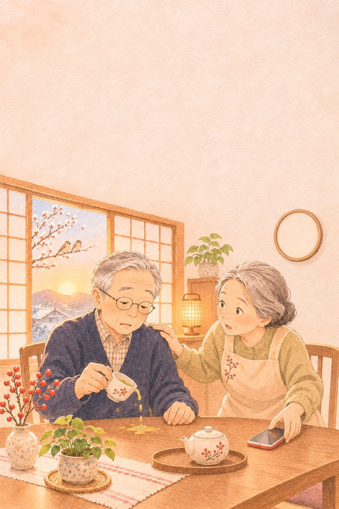
Nhận ra
trong 1 phút
Nhận ra đột quỵ, gọi 115 kịp lúc
nōsotchū
Người đầu tiên cứu người bị đột quỵ thường là người thân ngồi ngay bên cạnh.
Ba phép thử của người Nhật
Bộ Y tế Nhật và các tỉnh in khắp nơi khẩu hiệu ACT FAST: thấy một dấu hiệu là hành động ngay. Ba phép thử ai cũng làm được trong một phút:
- Mặt
Bảo người đó nói "Iii" như khi chụp ảnh. Một bên miệng không nhếch lên là bất thường.
- Tay
Bảo giơ hai tay ngang vai, giữ một lúc. Một tay tự rơi xuống là bất thường.
- Lời
Bảo nói lại một câu dễ, như "Hôm nay trời đẹp". Nói ngọng, nói sai, không hiểu là bất thường.
Ở Nhật gọi cấp cứu số 119. Ở nhà mình là 115. Gọi xong thì nhìn đồng hồ, nhớ giờ bắt đầu.
Nguồn: Bộ Y tế, Lao động và Phúc lợi Nhật Bản, tạp chí cho người dân 10/2024 (ACT FAST); tài liệu phòng đột quỵ của tỉnh Gunma, Nagano.
Bữa sáng nhà ông bà Sato
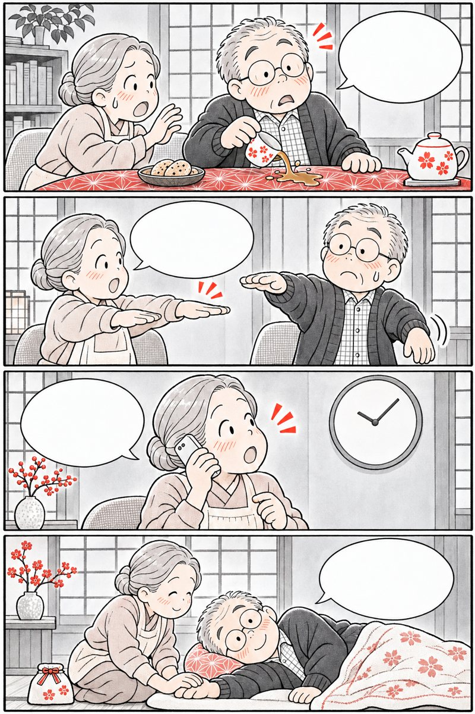
Ơ… tay tôi sao thế này? Ông giơ hai tay lên xem nào! Nghi đột quỵ, từ 7 giờ 10! Ông nằm nghiêng nhé, xe sắp tới.Bà Sato không chờ xem ông có đỡ không. Ba phép thử, một cuộc gọi, một cái đồng hồ.
Mỗi phút một mảnh vườn héo
Não như một khu vườn sống nhờ mạch nước. Mạch bị chặn, vùng phía sau héo dần, lan rộng theo từng phút.
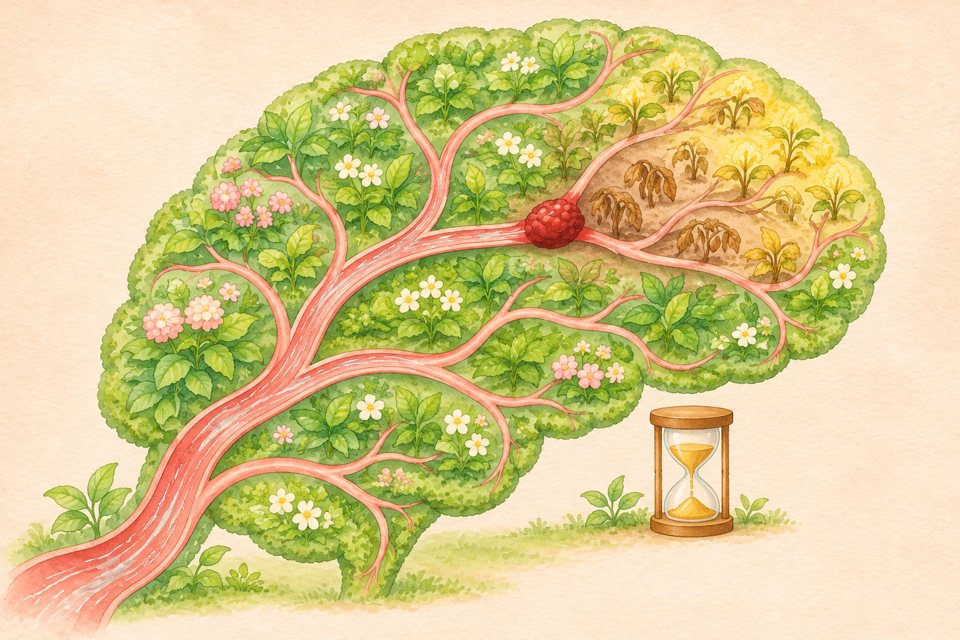
Cục máu đông chặn dòng Vùng héo lan dần- 1,9 triệu: số tế bào thần kinh một nghiên cứu ước tính não mất đi trong mỗi phút đột quỵ chưa được chữa.
- Một bên người: não trái lo nửa người bên phải và ngược lại, nên dấu hiệu thường chỉ ở một bên.
- 4,5 giờ: thuốc làm tan cục máu đông chỉ dùng được trong khoảng thời gian này. Đến viện càng sớm, vườn còn càng nhiều.
Nguồn: Saver JL, "Time is brain — quantified", tạp chí Stroke, 2006; Hội Đột quỵ Nhật Bản, hướng dẫn thuốc tiêu sợi huyết.
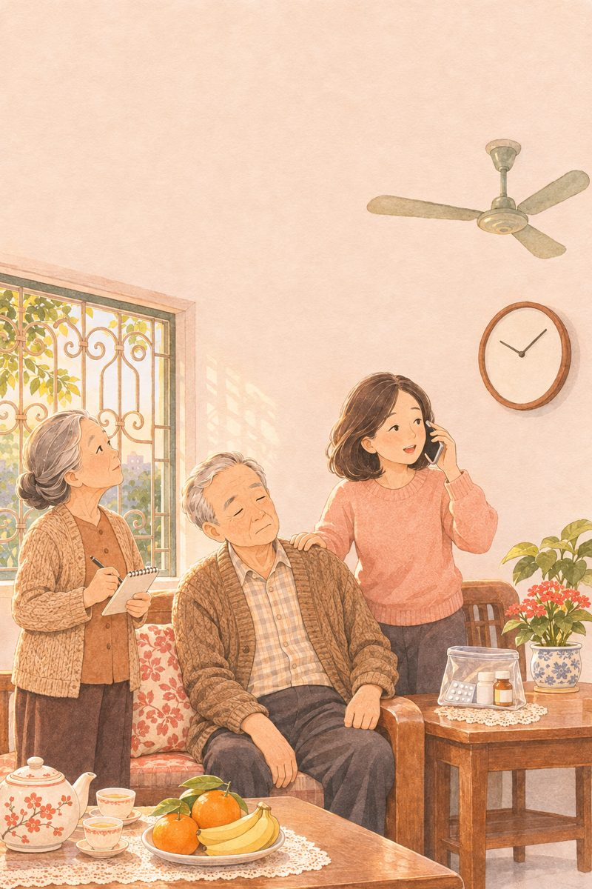
Mẹo nhà mình, có nên?
Ai cũng muốn làm ngay một việc gì đó. Nhưng mấy mẹo quen thuộc lại làm mất giờ vàng.
Tưởng vậy
- Chích máu đầu ngón tay
- Cho ngậm An Cung, uống nước
- Cạo gió, đợi xem có đỡ
- Tự chở đi bằng xe máy
Thật ra
- Không có tác dụng
- Người bệnh hay nuốt khó, dễ sặc
- Đỡ rồi vẫn đi viện ngay
- Gọi 115, nằm nghiêng chờ
Nguồn: bác sĩ Khoa Cấp cứu, Bệnh viện Bạch Mai (báo Pháp Luật); báo Tiền Phong.
Nhận ra trong 1 phút
Dấu hiệu đến đột ngột. Nhớ 6 chữ cái BE FAST:
Tự nhiên loạng choạng, đứng không vững
Mờ hoặc mất nhìn một bên, nhìn đôi
Bảo cười: một bên miệng xệ xuống
Giơ hai tay: một bên tự rơi xuống
Nói ngọng, nói lắp, không hiểu lời
Ngay lập tức. Nhìn đồng hồ, nhớ giờ
Làm ngay
- Gọi 115, nói rõ "nghi đột quỵ"
- Ghi lại giờ bắt đầu, hoặc lần cuối thấy còn bình thường
- Đang nôn, lơ mơ: đặt nằm nghiêng
Đừng làm
- Chích máu đầu ngón tay
- Cạo gió, xoa dầu rồi ngồi đợi
- Cho ăn, uống, ngậm thuốc
- Tự chở đi bằng xe máy
Nguồn: quy tắc BE FAST; bác sĩ Khoa Cấp cứu, Bệnh viện Bạch Mai.
Chuẩn bị sẵn từ hôm nay
Méo miệng, yếu tay, nói ngọng: gọi 115, nhớ giờ.
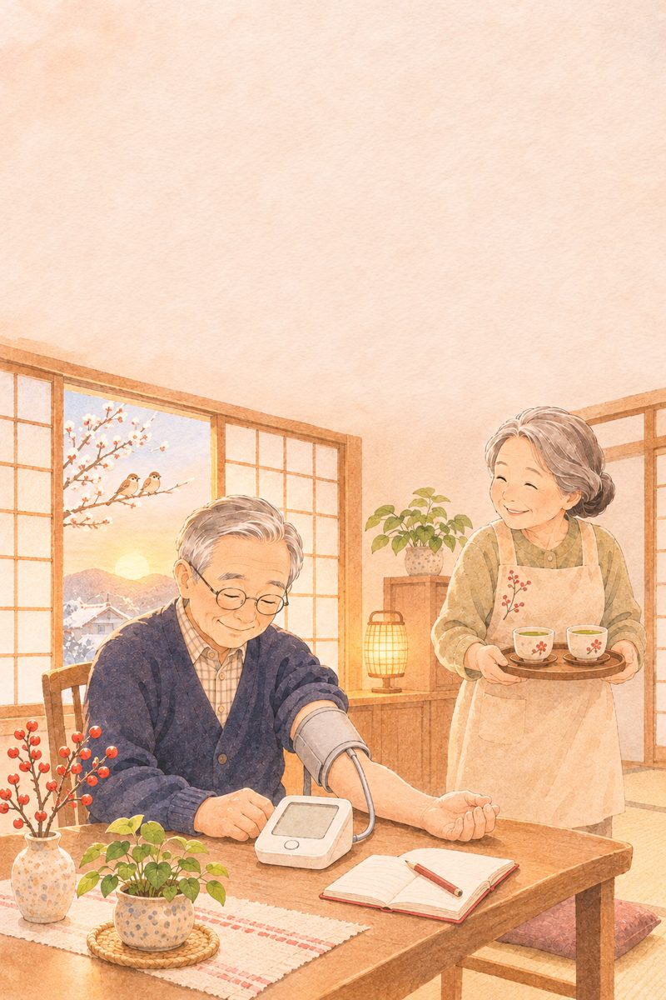
Đo huyết áp
buổi sáng
Bài học từ thị trấn Hisayama
katei ketsuatsu
Huyết áp cao thường không đau, không mệt. Muốn biết, chỉ có cách đo.
Thị trấn đã đẩy lùi đột quỵ
- 1961
Người Nhật ăn rất mặn. Các bác sĩ Đại học Kyushu bắt đầu khám định kỳ cho cả thị trấn Hisayama, gần Fukuoka, để tìm nguyên nhân đột quỵ.
- Phát hiện
Thủ phạm số 1 là huyết áp cao. Nhiều người bị cao mà không hề biết.
- Những năm 1970
Người dân đo huyết áp đều, ăn bớt mặn, uống thuốc đúng hẹn. Số người bị đột quỵ giảm còn khoảng một phần ba.
Không có thần dược nào cả. Chỉ là cái máy đo huyết áp và bát canh nhạt hơn.
Nguồn: Bộ Y tế, Lao động và Phúc lợi Nhật Bản, thống kê tử vong 2024; tài liệu tổng quan về Nghiên cứu Hisayama (Đại học Kyushu, từ 1961).
Ông Sato khỏe re
 Tôi khỏe re, có đau đầu gì đâu!
Ông đo thử xem nào.
Ơ… cao thế này à?
Sáng nào cũng đo, giỏi lắm ông!
Tôi khỏe re, có đau đầu gì đâu!
Ông đo thử xem nào.
Ơ… cao thế này à?
Sáng nào cũng đo, giỏi lắm ông!
Huyết áp cao đi lặng lẽ: không đau, không mệt, chỉ cái máy đo mới bắt được.
Ống nước chịu áp lâu năm
Mạch máu giống ống nước mềm. Áp lực cao ngày này qua ngày khác làm thành ống dày lên, cứng lại: chỗ thì hẹp, chỗ thì giòn.
 Mạch khỏe: mềm, thông
Mạch chịu áp cao nhiều năm
Hẹp lại, cục máu đông kẹt: dễ tắc
Mỏng, phình, nứt: dễ vỡ
Mạch khỏe: mềm, thông
Mạch chịu áp cao nhiều năm
Hẹp lại, cục máu đông kẹt: dễ tắc
Mỏng, phình, nứt: dễ vỡ
- Tắc: cục máu đông kẹt ở chỗ hẹp, phần não phía sau thiếu máu. Đó là nhồi máu não, chiếm khoảng 2/3 số ca đột quỵ.
- Vỡ: chỗ mạch giòn vỡ ra, máu tràn vào não. Đó là xuất huyết não.
- Giữ huyết áp ở mức bác sĩ hẹn là giảm sức ép lên cả hai đường.
Hình vẽ đã đơn giản hóa cho dễ hình dung.
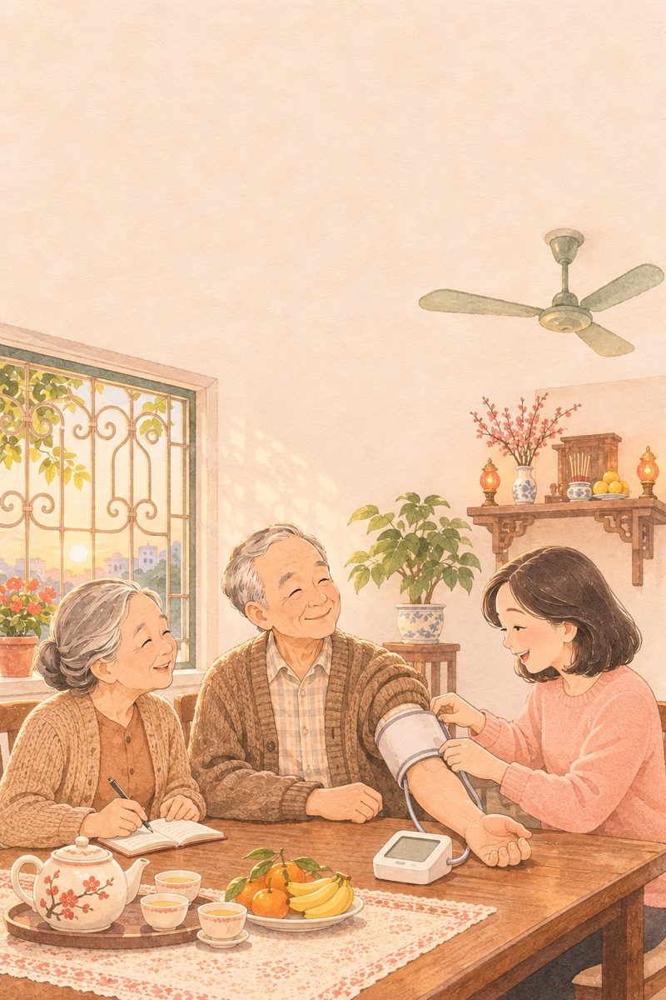
Không đau đầu là ổn?
Huyết áp cao thường không có dấu hiệu gì. Đợi nhức đầu, chóng mặt mới đi đo là đợi lâu quá.
Tưởng vậy
- Không đau đầu là huyết áp ổn
- Đo thấy ổn rồi thì bỏ thuốc
- Lâu lâu đo một lần là đủ
Thật ra
- Phải đo mới biết
- Ổn là nhờ thuốc. Bớt thuốc phải hỏi bác sĩ
- Đo mỗi sáng mới thấy chiều hướng
Đo huyết áp kiểu Nhật
Bác sĩ Nhật tin con số đo ở nhà, buổi sáng hơn con số đo ở phòng khám.
Buổi sáng
- Trong 1 giờ sau khi dậy
- Đã đi vệ sinh
- Trước khi ăn sáng và uống thuốc
Buổi tối
- Trước khi đi ngủ
- Không đo ngay sau khi tắm, uống rượu
Ở nhà thư thái hơn nên ngưỡng ở nhà thấp hơn. Có người khám thì bình thường, sáng ở nhà lại cao.
Nguồn: Hội Tăng huyết áp Nhật Bản, Hướng dẫn điều trị tăng huyết áp 2019 (cách đo và ngưỡng huyết áp tại nhà).
Ghi huyết áp 7 buổi sáng liền
Mỗi sáng đo 2 lần, ghi số trung bình vào ngày đó.
Đi khám nhớ mang theo
Chụp màn hình trang này đưa bác sĩ xem. Số tự lưu trong máy này.
Sổ này để theo dõi, không thay cho chẩn đoán của bác sĩ. Ngưỡng theo Hội Tăng huyết áp Nhật Bản 2019: ở nhà từ 135/85 là cao, dưới 125/80 là bình thường.

Tắm
mùa đông
Sao cho an toàn với bố mẹ
nyūyoku
Ở Nhật, người già đuối nước trong bồn tắm nhiều gần gấp đôi số người mất vì tai nạn giao thông.
Người Nhật gọi nó là “heat shock”
Người Nhật thích ngâm bồn nước nóng mỗi tối. Nhưng nhà cũ ở Nhật, phòng thay đồ và nhà tắm lạnh buốt về mùa đông. Bước từ lạnh vào nóng, cơ thể bị sốc. Họ gọi hiện tượng này là heat shock.
người mất mỗi năm vì sự cố liên quan đến tắm, gồm cả đột quỵ, nhồi máu cơ tim và đuối nước trong bồn. Khoảng 80% rơi vào tháng 11 đến tháng 4.
Người Nhật làm gì
Mùa đông đặt một máy sưởi nhỏ ở phòng thay đồ. Nhà mới xây thì nhà tắm có sưởi sẵn. Ông bà đi tắm thì báo người nhà, ai tắm lâu là có người gọi hỏi.
Nguồn: ước tính của nhóm nghiên cứu Bộ Y tế Nhật Bản 2012–2013; Cục Người tiêu dùng Nhật Bản, khuyến cáo phòng tai nạn khi tắm cho người cao tuổi.
Tối mùa đông nhà ông bà Sato
 Rét quá, tắm nóng cho sướng!
Brrr… lạnh buốt!
Ơ… sao tối sầm thế này?
Sưởi trước rồi tắm nhé ông!
Rét quá, tắm nóng cho sướng!
Brrr… lạnh buốt!
Ơ… sao tối sầm thế này?
Sưởi trước rồi tắm nhé ông!
Lạnh, rồi nóng, rồi đứng dậy vội: ba cú sốc chỉ trong vài phút. Lật trang để xem vì sao.
Huyết áp đi tàu lượn
Chỉ trong vài phút đi tắm, huyết áp có thể vọt lên rồi tụt xuống hai lần liền.
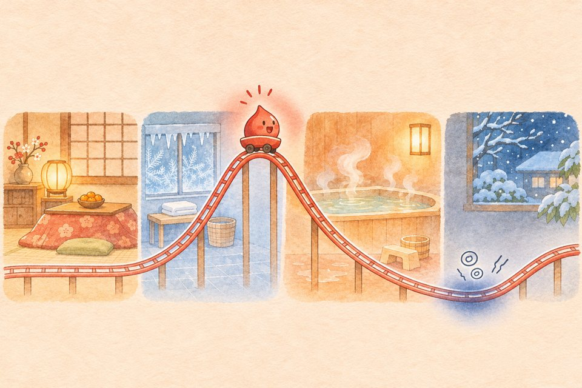
Vọt lên: dễ vỡ mạch máu Tụt sâu: choáng, ngã Phòng ấm Phòng thay đồ lạnh Ngâm nước nóng Đứng dậy vội- Lạnh: mạch máu co lại như vòi nước bị bóp, huyết áp vọt lên.
- Nóng: mạch máu giãn ra, huyết áp tụt xuống.
- Đứng dậy nhanh: máu chưa kịp lên não, người choáng váng, dễ ngã hay trượt chìm trong bồn.
Tranh cho thấy chiều lên xuống của huyết áp, không phải số đo thật.

Tại "trúng gió" à?
Người mình hay bảo ông bà tắm đêm bị trúng gió. Nhiều khi đó là huyết áp lên xuống đột ngột, có khi là đột quỵ thật.
Tưởng vậy
- Nước càng nóng càng tốt, cho ra mồ hôi
- Nhậu xong tắm cho dễ ngủ
- Choáng thì cạo gió là khỏi
Thật ra
- Nước từ 42°C dễ làm người già lơ mơ
- Rượu làm huyết áp tụt thêm
- Méo miệng, yếu tay: gọi 115 ngay
Tắm mùa đông cho bố mẹ
Thử 7 tối
Tối nào bố mẹ tắm đúng cách, đóng dấuSưởi phòng trước, nước vừa ấm, đứng dậy thật từ từ.
Nguồn: Cục Người tiêu dùng Nhật Bản; tỉnh Iwate, tài liệu phòng heat shock (nước từ 42°C dễ gây lơ mơ).
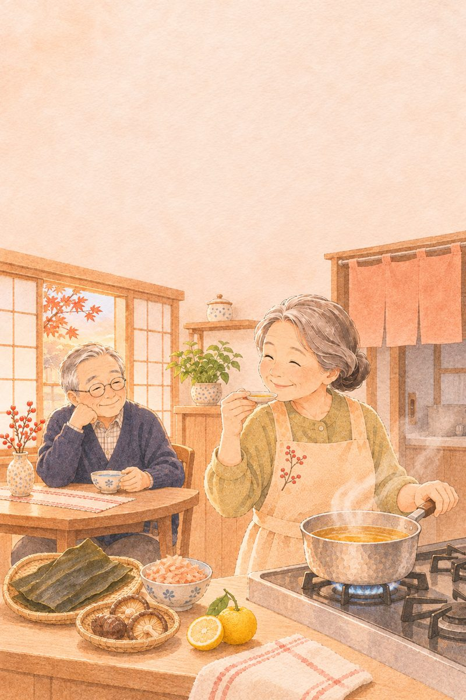
Ăn nhạt
mà vẫn ngon
Theo cách của người Nhật
karushio
Ở Nhật có một bệnh viện tim mạch nổi tiếng nhờ món ăn nhạt mà ngon.
Bệnh viện dạy nấu ăn nhạt
Trung tâm Tim mạch Quốc gia Nhật ở Osaka đặt cho cách nấu của mình một cái tên: karushio, nghĩa là "muối nhẹ".
- Bếp bệnh viện
Bữa cơm bệnh nhân bớt muối nhưng phải ngon: đậm nước dùng, thêm vị chua, vị thơm, nướng cho dậy mùi.
- Từ 2014
Bệnh viện mở cuộc thi công thức nấu ít muối cho người dân cả nước. Món đoạt giải được đưa vào bữa ăn của bệnh nhân.
- Ra siêu thị
Thực phẩm nhạt mà ngon được in dấu chứng nhận karushio trên bao bì để người mua dễ chọn.
Nhãn ở Nhật ghi sẵn số muối
Thực phẩm đóng gói ở Nhật bắt buộc in "lượng muối tương đương" tính bằng gam. Nhãn ở mình thường chỉ ghi natri, trang cuối chương có cách đổi.
Nguồn: Trung tâm Tim mạch Quốc gia Nhật Bản (NCVC), dự án karushio và cuộc thi công thức S-1g; Cục Người tiêu dùng Nhật Bản, tiêu chuẩn ghi nhãn thực phẩm 2015.
Chén nước tương nhỏ
 Ông định rưới hết đĩa à?
Chấm chén nhỏ thôi ông.
Ngon không ông?
Chấm thay rưới nhé!
Ông định rưới hết đĩa à?
Chấm chén nhỏ thôi ông.
Ngon không ông?
Chấm thay rưới nhé!
Mẹo bớt muối hay được dạy ở Nhật: rưới lên thì ngấm hết, chấm vào thì chỉ vừa đủ.
Vị thứ năm: umami
Năm 1908, giáo sư Ikeda Kikunae ở Tokyo tìm ra trong nước dùng tảo kombu một vị riêng, không mặn, không ngọt, không chua, không đắng. Ông gọi là umami, vị ngọt thịt.
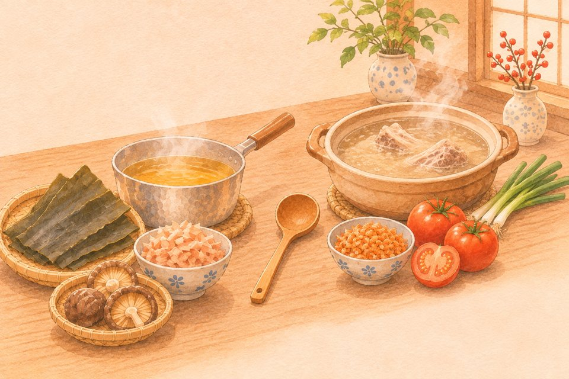
Bếp Nhật: tảo kombu, cá bào, nấm hương Bếp Việt: xương hầm, cà chua, tôm khô- Nước dùng đậm umami thì món ăn thấy tròn vị, bớt muối mà lưỡi không thấy thiếu.
- Đó là bí quyết của karushio: đậm vị nhờ nước dùng, không nhờ muối.
Nguồn: Ikeda Kikunae, Đại học Hoàng gia Tokyo, 1908 (phát hiện vị umami); Trung tâm Tim mạch Quốc gia Nhật Bản, cách nấu karushio.
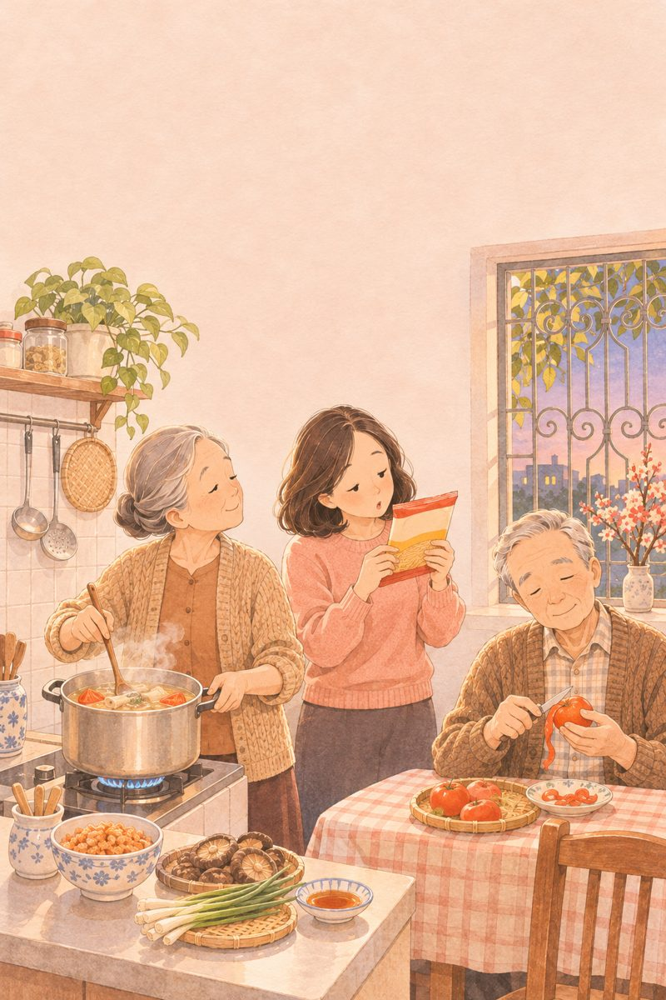
Muối trốn ở đâu?
Không thấy mặn là ít muối
Mì gói, bánh mì, giò chả, dưa cà có nhiều muối mà không thấy mặn
Muối hồng, muối tre thì ăn thoải mái
Muối nào cũng là muối
Nhãn chỉ ghi natri, không ghi muối
Natri nhân 2,5 là ra muối
Bếp nhà mình, muối nhẹ
Thử 7 ngày
Bữa nào nấu muối nhẹ, đóng dấuHệ số đổi: 1 g natri tương đương khoảng 2,54 g muối. Tổ chức Y tế Thế giới khuyên dưới 5 g muối mỗi ngày.
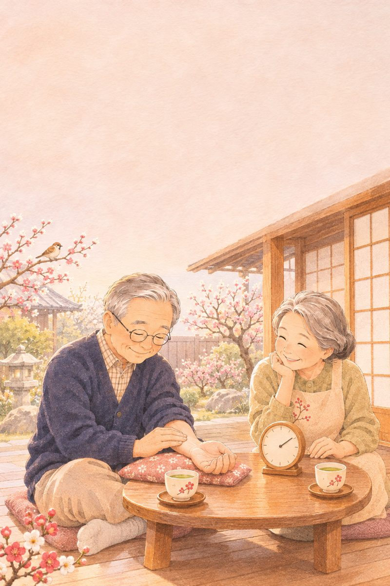
Bắt mạch
15 giây
Biết sớm tim đập loạn
myaku
Ở Nhật, ngày 9 tháng 3 là Ngày bắt mạch, vì "3-9" đọc lên giống chữ "mạch".
Một tuần cả nước bắt mạch
Từ năm 2015, Hiệp hội Đột quỵ Nhật Bản và Hội Nhịp tim Nhật lấy ngày 9/3 là Ngày bắt mạch, cả tuần 9–15/3 là Tuần lễ rung nhĩ.
- Vì sao
Nhật có hơn 1 triệu người bị rung nhĩ, tim đập không đều. Nhiều người không thấy gì nên không biết mình bị.
- Làm gì
Các tỉnh mở buổi đo điện tim miễn phí, phát tờ rơi dạy người dân tự bắt mạch 15 giây ở cổ tay.
Tỉnh Fukuoka, quê của HSC Japan, năm nào cũng hưởng ứng. Chỉ cần 3 ngón tay và 15 giây.
Nguồn: Hiệp hội Đột quỵ Nhật Bản và Hội Nhịp tim Nhật Bản, Ngày bắt mạch và Tuần lễ rung nhĩ; tỉnh Fukuoka, thành phố Kumamoto, tỉnh Niigata, tài liệu cho người dân.
Ngày 9 tháng 3 nhà ông bà Sato
 Bà bắt mạch cho tôi xem nào.
Mạch tôi lộn xộn à?
Cho tôi hẹn đo điện tim ạ.
Biết sớm là yên tâm rồi!
Bà bắt mạch cho tôi xem nào.
Mạch tôi lộn xộn à?
Cho tôi hẹn đo điện tim ạ.
Biết sớm là yên tâm rồi!
Ông Sato không thấy mệt, không thấy hồi hộp. Chỉ ba ngón tay của bà mới bắt được.
Tim rung, máu đọng thành cục
Rung nhĩ là lúc ngăn trên của tim rung lăn tăn thay vì co bóp đều. Máu chảy chậm, đọng lại thành cục.
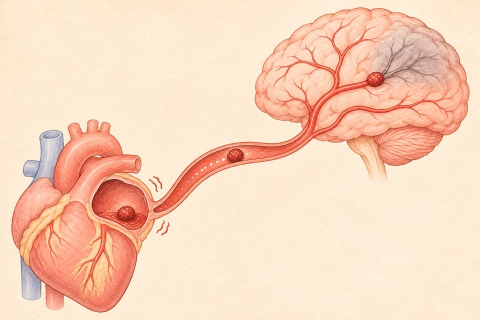
Ngăn trên rung, máu đọng Cục máu đông trôi lên não- Khoảng 5 lần: người rung nhĩ dễ bị nhồi máu não hơn người bình thường.
- Khoảng 3 trên 10 ca nhồi máu não ở Nhật là do rung nhĩ, và loại này hay nặng.
- Phát hiện sớm, điều trị theo bác sĩ thì phòng được nhiều ca.
Nguồn: Hiệp hội Đột quỵ Nhật Bản, tài liệu Ngày bắt mạch.
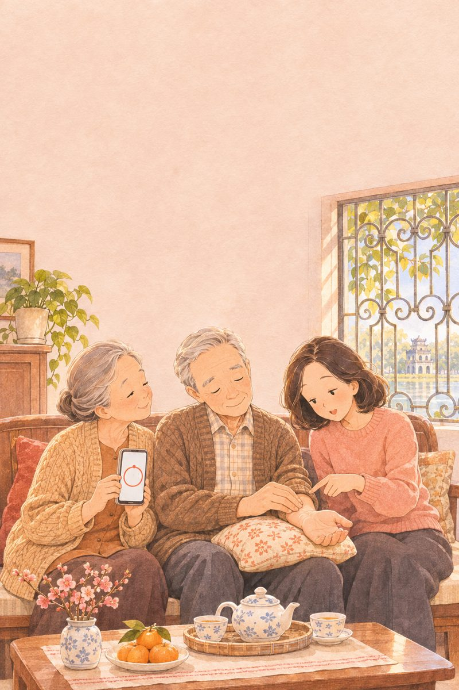
Tim đập nhanh mới đáng lo?
Tim đập nhanh mới đáng lo
Đáng lo là đập không đều, lúc nhanh lúc chậm
Không hồi hộp, khó thở là tim khỏe
Nhiều người rung nhĩ không thấy gì cả
Uống thuốc chống đông rồi, dùng thêm gì cũng được
Thêm thuốc hay thực phẩm chức năng nào cũng phải hỏi bác sĩ
Bắt mạch cùng cuốn sách
Khi nghỉ, nhịp tim người lớn thường 60–100 nhịp mỗi phút. Bắt mạch để tự theo dõi, không thay cho đo điện tim.